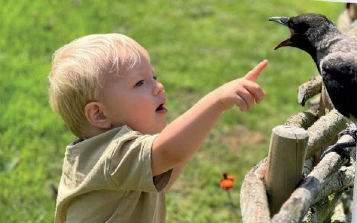
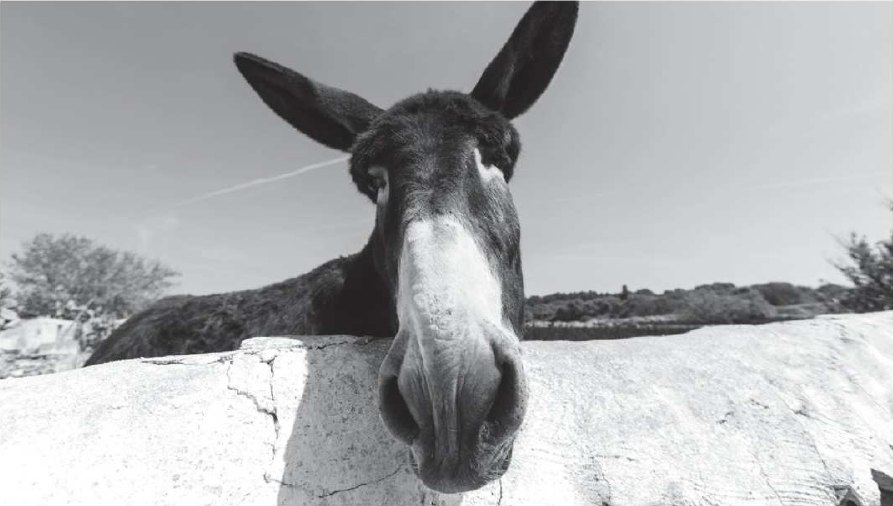
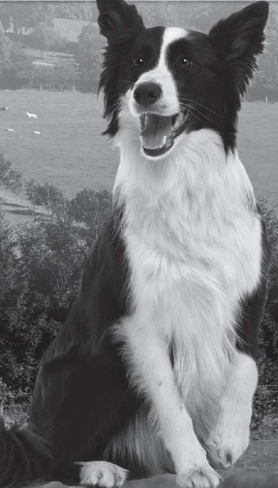
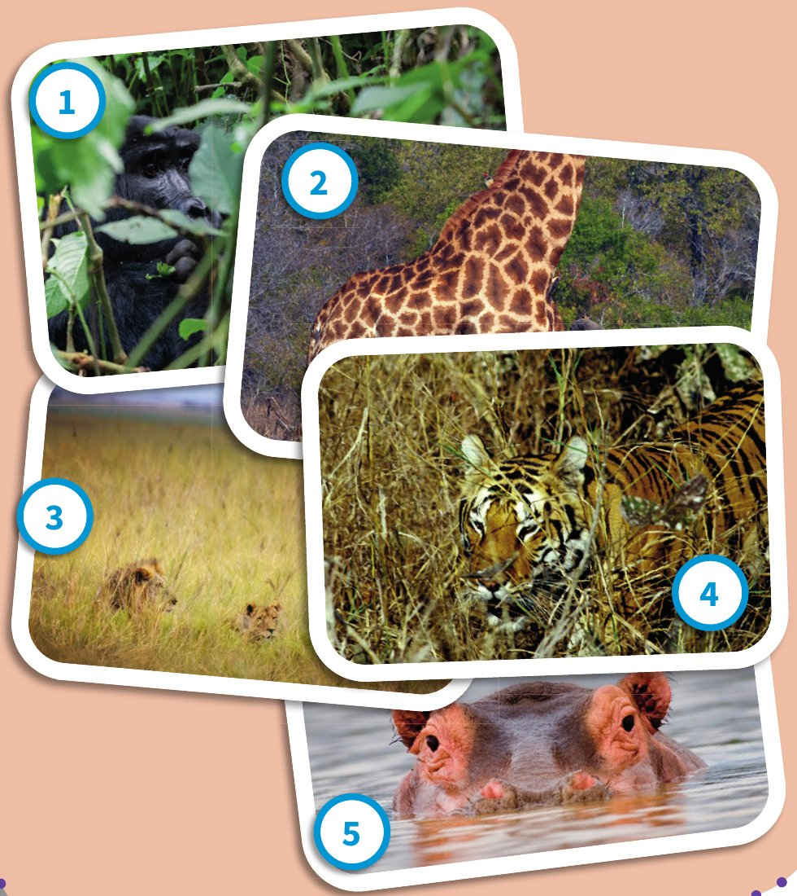

Language in action: watch a vlog about a trip to a wildlife centre and learn the past simple of regular (laughed, visited) and irregular verbs (took, saw, went). Learn to say -ed the right way, read the story of a boy and his crow, and talk about things that happened … ago.
1. Elephants weigh a lot. They're .
2. Parrots make a lot of sound. They're .
3. A dolphin can play with a ball. It's .
4. A crocodile has big teeth. Be careful — it's !
5. My cat sleeps all day and doesn't want to move. It's .
6. Wolves live in nature, not with people. They're .
7. A giraffe has got a very neck.
8. Look at the peacock's tail — it's so !
9. Aww, a baby panda! It's really .
10. Mice don't make a lot of sound. They're .
| I / he / she / it | you / we / they | |
|---|---|---|
| + | was | were |
| − | wasn't | weren't |
| ? | Was it fun? | Were you at home? |
| there | there was + one thing | there were + many things |
1. Two weeks ago Kai on holiday with his family.
2. They at a big farm in the countryside.
3. lots of animals — cows, sheep and noisy chickens.
4. a huge, heavy horse too.
5. The farm dog dangerous. It was very cute!
6. The weather wasn't great, but Kai and his sister bored.
7. there any wild animals? — Yes, there . Two foxes!
8. it a good holiday? — Yes, it !
Were you at home for the break?
MatveyNo, I wasn't. I was at my grandma's. Her house is quiet and her dog is very lazy!
1. Where were you for the two weeks?
2. Who were you with?
3. What was the weather like? Was it cold?
4. Were there any animals? What were they like?
5. What was the best day? Why?
1. Which animals ran away?
2. Who touched a snake?
3. What did the parrot say?
| Regular | Irregular | |
|---|---|---|
| + | Everyone laughed. | I took this picture before they ran away. |
| − | I didn't touch it. | We didn't see any elephants. |
| Past time expressions | Our class visited a wildlife centre last week. | They didn't go to the centre yesterday. |
1. Regular past simple forms end in .
2. Irregular verbs don't follow a pattern: take → , run → .
3. In negative sentences we use + the verb (touch, see, go) — for regular and irregular verbs.
| /t/ | /d/ | /ɪd/ |
|---|---|---|
| liked | played | wanted |
2. wanted
3. danced
4. needed
1. climb → climbed
2. hunt → hunted
3. start → started
4. want → wanted
5. watch → watched
Take turns: one person says a verb (call, climb, hunt, start, want, watch, visit, laugh, touch), the other says the past form. Is the pronunciation right?
1.
2.
3.
4.
5. (say them out loud!)
6.
Now ask each other: What did you do last weekend? Answer with three sentences — one irregular verb, one regular verb and one didn't.
| yesterday | last … | … ago |
|---|---|---|
| yesterday yesterday morning | last night last week / month / year | three days ago two weeks ago six months ago |
1. We visited the zoo Saturday.
2. I saw a fox two days .
3. My cat didn't eat .
4. They went to Africa .
5. I watched a film about sharks .
Not sure about an irregular verb? Look at the list on Student's Book p.134.

A few years ago, a Danish man found (find) a baby crow. It was very thin and hungry. There wasn't an animal specialist to help him so the man take the crow home. His family give the crow food and it become part of the family.
They call the crow Russell. Their son Otto love Russell. Russell not leave Otto and they spend a lot of time together.
After a few weeks, the family put the crow in their garden to fly home. Russell doesn't live with the family now but he visits them every day. Otto's mum share the story on social media. Russell and Otto are famous now!
1. The crow was big and strong when the man found it.
2. Russell lives with Otto's family now.
3. Russell visits the family every day.
2. I get up ago.
3. I start school ago.
4. I have lunch ago.
5. I meet my English teacher ago.
Say your sentences. Then listen to your teacher's sentences. Are any the same?

2. We lots of snakes at the wildlife park.
3. The horse to eat my apple. It wasn't hungry.
4. They for the cat in the garden but they him.
5. My dad a parrot as a pet when he was a child.
6. The cat out, she on my bed all day.
2. Crocodiles / killed / year / 1,000 / people / last
3. bears / days / in town / ago / Two / three / were / there
4. blue / last / saw / whales / summer / They
5. an / The / home / hour / cat / came / ago

Flo, a dog from Northern Ireland, suddenly disappeared one day. The Gallaghers, Flo's family, looked (look) for her but they not find her. They were very sad.
Three years later, a volunteer at the local animal hospital hear about a dog with no home. The dog sleep in an old building about ten miles from the Gallaghers' house. The volunteers at the hospital not want the dog to stay there. They go to find her.
Soon the dog have a new home at the animal hospital, and they share photos of her on social media. The Gallagher family see the photos and become very excited – it was Flo! The next day they take her home. They give her a big dinner.
2. She / get up / four hours
3. They / arrive in London / one week
4. We / have / lunch / an hour
1. An elephant can weigh 6,000 kilos. It's very .
2. Dolphins can understand people. They're .
3. My cat sleeps sixteen hours a day. He's so !
4. Tigers aren't pets — they're animals.
5. Look at the parrot's colours! It's .
1. A hippo is big and . It weighs more than a car!
2. Crows can use sticks as tools. They're very .
3. Lions sleep up to twenty hours a day. They look , but they can run very fast!
4. Wolves don't live with people. They're animals.
5. A peacock has got a long, tail.
1. I saw a eutc duck in the park.
2. There are gealr crocodiles in the water here.
3. There was a aubfetiul parrot in the tree.
4. Listen to that oinys lion!
2.
3.
4.
5.
1. I … tennis yesterday.
2. There … a loud noise outside.
3. We … to music all weekend.
4. Joe … great at the moment!
5. We … here last year.

3.
4.
5.
Describe the animals in Sarah's photos with an adjective: The gorilla was … The hippo was …
| yesterday | last … | … ago |
|---|---|---|
| yesterday yesterday morning | last night last week / weekend / year | an hour ago three days ago two weeks ago |
1. I had lunch an hour .
2. We watched a film about crows night.
3. My sister studied for her test morning.
4. Our class visited a wildlife centre .
5. They didn't go to the zoo .
6. I started school seven years .
7. The man found a baby crow .
8. Ben touched a snake .
1. Two elephants ran away. → No! Two elephants run away. A mother bear and two baby bears run away.
2. They saw elephants. → No! They see any elephants.
3. The man found a big, strong crow. → No! He find a big, strong crow. He find a thin, hungry baby crow.
4. The family called the crow Otto. → No! They call the crow Otto. They call it Russell.
5. Russell left Otto. → No! Russell leave Otto. They spend a lot of time together.
6. Otto's dad shared the story. → No! Otto's dad share the story. Otto's mum share it.
Last week our class visit a wildlife centre. We get up very early and the bus stop at the centre at nine o'clock.
First we watch the bears. The mother bear was huge! Then I touch a snake. Lily not want to touch it. Everyone laugh when the parrot start to talk.
We have lunch by the lake and I eat two sandwiches. I take a lot of photos. Yesterday I show them to my grandma and she love them!
I went to Brazil on holiday last week.
NinaFalse! You were at school last week.